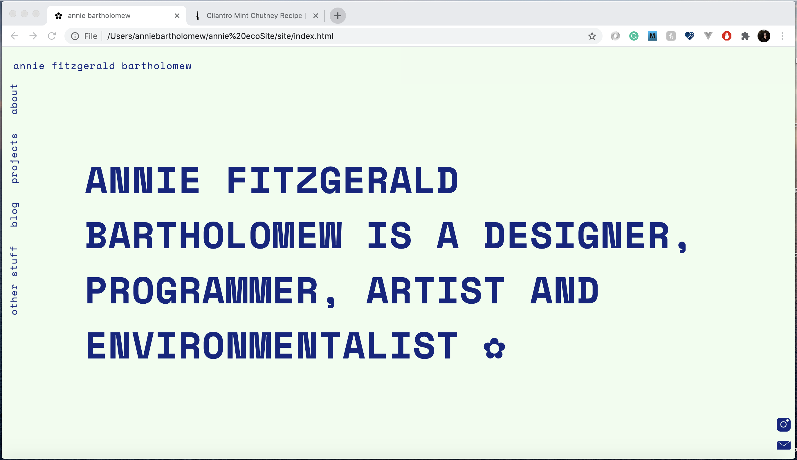
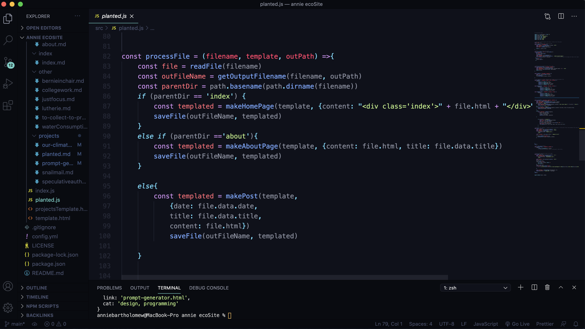

Planted
2021
Planted is a static site generator that I am developing to minimize its ecological footprint. I used it to create this site.

What is a static site generator?
A static site generator is a software application that creates HTML pages from templates + a content source (usually markdown files). You might have heard of or used other static site generators such as Gatsby, Hugo, or Jekyll. They don't require using a CMS/database or a backend and it's quicker than writing out a ton of HTML every time you want to create a new page. They're used quite often for blogging.
 A peek at Planted under the hood
Why bother to develop a new SSG then, if so many already exist?
Well, for one, it was good practice for me to create a new project in NodeJS. I'm also quite particular in how I like my sites to look and feel. While creating a custom theme for an existing site generator was an option, it likely wouldn't have been much more efficient. I've used other static site generators before (my blog still uses Hugo), but sorting through the documentation, recreating templates, writing CSS would have taken nearly as long as creating this lightweight, simple, easy to customize generator. Of course, this project is still in its early stages. I'm planning on making it open source, so anyone can utilize it for their own projects. And I wanted the SSG to be as minimal as possible, minimize its ecological footprint and still look beautiful - to do that with an existing SSG, I would have had to do some Frankenstein-esque experiementation with cutting out and adding in code.
What makes its footprint smaller?
For one, just using a static site generator in general means there is less energy required to serve the content when a user comes across the page since it doesn't have to be re-rendered every time. And by limiting the design choices to a single font, using system defaults as much as possible and preprocessing images before they're loaded into the site contributes to a smaller page weight.
Will there be additional themes?
Currently there is only one theme - the one you're looking at right now. I'm hoping to add additional themes in the future, once I work more on the image preprocessing. I was previously using the Jimp library to automate the image resizing process and was hoping to use it for image dithering as well, but the quality of the images after was pretty dismal and the dithering did not have the effect I was looking for.